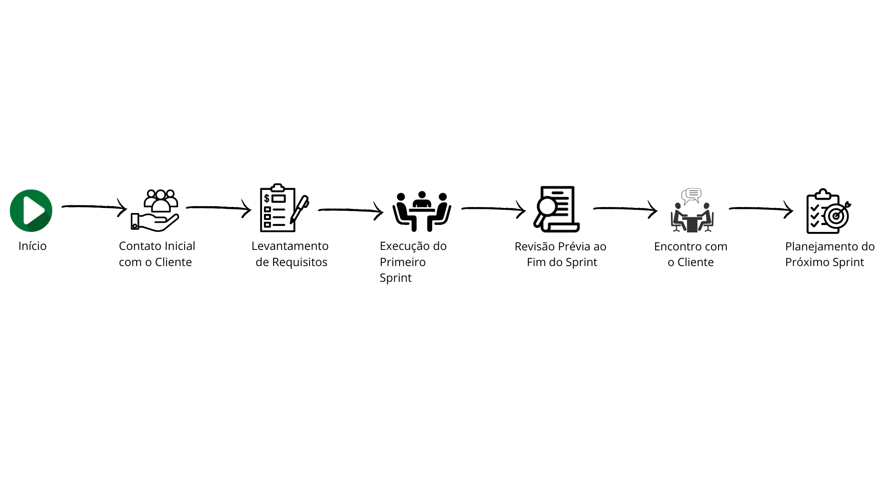

Processo
Na CactusCode, acreditamos que um processo bem estruturado é fundamental para o sucesso de qualquer projeto. Por isso, utilizamos práticas ágeis baseadas no Scrum e no Kanban, garantindo entregas eficientes e alinhadas às expectativas do cliente.
Etapas do projeto

1. Contato Inicial com o Cliente
O processo começa com uma reunião entre a equipe de desenvolvimento e o cliente. Durante esse encontro, o gerente de projetos e a equipe discutem as metas gerais do projeto e sugerem uma estimativa inicial do número de sprints necessários para sua conclusão. Essa estimativa é flexível e pode ser ajustada conforme as demandas e exigências adicionais do cliente ao longo do desenvolvimento, assim como a definição dos valores que serão cobrados pela equipe, onde podemos neste primeiro encontro fazer uma estimativa geral e o recebimento parcelado desse valor, de maneira que todos recebam um valor quinzenal e não saiam no prejuízo caso o cliente desista no meio do processo.
2. Levantamento de Requisitos
Nesta etapa, a equipe trabalha em conjunto com o cliente para identificar e documentar os requisitos do software. O objetivo é entender plenamente as necessidades e expectativas, garantindo que todas as funcionalidades críticas sejam mapeadas e priorizadas.
3. Execução do Primeiro Sprint
- A equipe se reúne para planejar as atividades do sprint inicial, com base nas prioridades definidas no levantamento de requisitos.
- As tarefas são atribuídas a cada membro da equipe, respeitando seus papéis e especialidades, e organizadas em um quadro Kanban (como o Trello).
- O prazo padrão para a conclusão do sprint é de 15 dias. Durante esse período, a equipe trabalha para cumprir as metas estabelecidas
4. Revisão Prévia ao Fim do Sprint
- Um dia antes do término do sprint, o gerente de projetos organiza uma reunião para avaliar o progresso das tarefas.
- Durante essa reunião, são identificados os itens concluídos e as pendências, além de serem planejadas as demonstrações que serão apresentadas ao cliente.
5. Encontro com o Cliente
- A equipe apresenta ao cliente os resultados do sprint, incluindo uma demonstração funcional do software que reflete os avanços obtidos nos últimos 15 dias
- O cliente tem a oportunidade de revisar o progresso, sugerir alterações, adicionar ou remover funcionalidades, e alinhar expectativas com a equipe.
6. Planejamento do Próximo Sprin
- Após o feedback do cliente, o gerente de projetos reúne a equipe para planejar as atividades do próximo sprint.
- Novas tarefas são definidas, priorizadas e alocadas no quadro Kanban, dando início a um novo ciclo de desenvolvimento.
Funções dos membros da equipe
- Letícia Berti: Desenvolvedor Front End.
- Pablo Veiga: Desenvolvedor Back End.
- José Alisson: Gerente de Projeto.
- Giovanna Doreslany: Analista de Teste.